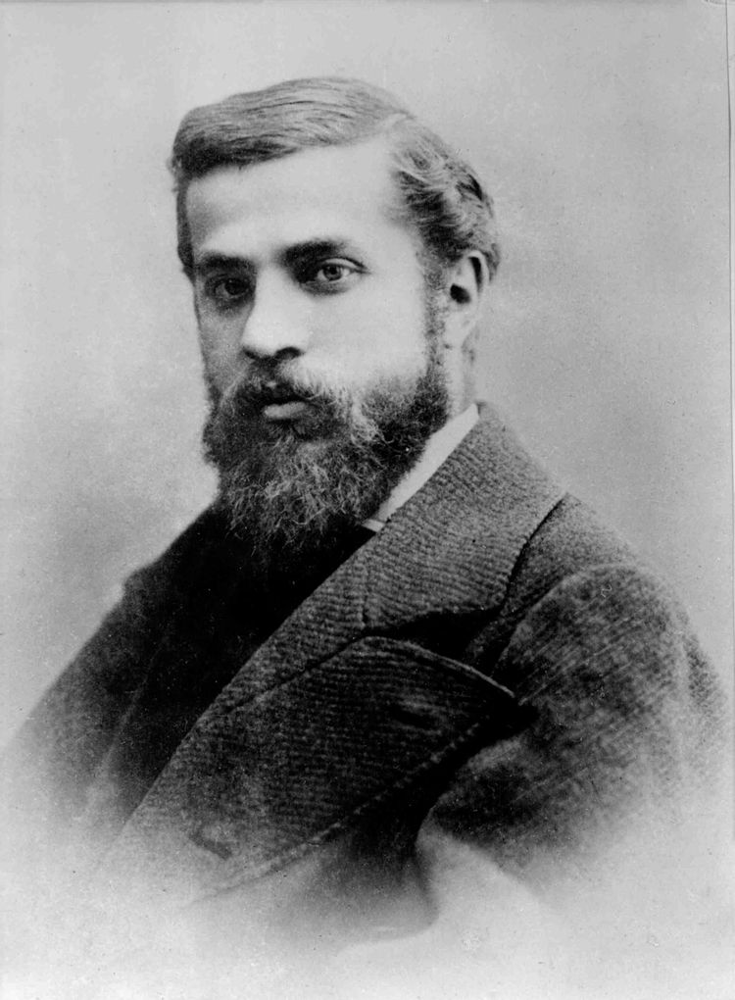

안토니 가우디
스페인 카탈루냐 출신의 건축가. 21세기인 지금도 바르셀로나를 빛낸 건축가이자, 스페인 건축학의 아버지이다. 일반적인 천재와는 다르게 생전에 이미 대성공한 건축가로서 스페인의 아르누보 건축의 중심 인물이기도 하며, 스페인 건축사에 큰 발자취를 남겼다. 본명은 카탈루냐어식으로 '안토니 가우디(Antoni Gaudí)'지만 카스티야어(스페인어)식 이름인 '안토니오 가우디(Antonio Gaudí)'로도 알려져 있다.

안토니 가우디의 일생
- 1.1852년, 스페인 카탈루냐 지방의 캄 데 타라고나(Camp de Tarragona) 바시 캄(Baix Camp)의
레우스(Reus) 혹은 리우돔스(Riudoms)라는 마을에서 5남매 중 막내로 태어났다. - 2.전기에 따르면 애늙은이였다는 이야기가 있으며, 어렸을 적부터 류마티스를 앓아 지팡이를 짚고 다녔다.
- 3.바르셀로나 건축전문학교에 입학한 가우디는 25세에 건축사 자격을 딴 후 시청 산하의 여러 프로젝트를
수주 받으면서 건축가의 길을 걷게 된다. - 4.1878년 카사 비센스[6]를 건축하기 시작하면서 본격적으로 유명해지기 시작한다.
- 5.그리고 1883년에는 구엘 가의 가문 건축가가 되었으며[8] 이 시점부터 '구엘'이라는 이름이 붙은 건축물을 대대적으로 건축하기 시작한다.
- 6.1926년 6월 7일 성당에서 미사를 마치고 돌아오던 길에 카탈루냐 법원 인근의 대로를 건너다 노면전차에 치여 치명상을 당했다.